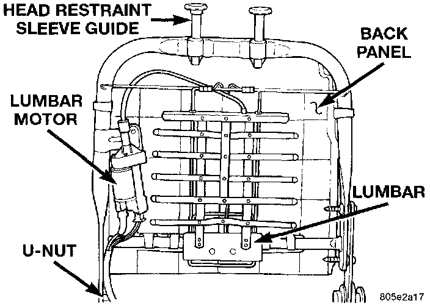

Power Lumbar Adjuster and Motor
REMOVAL1. Remove the power recliner adjuster and motor from the seat back frame as described.
2. Remove all of the seat back trim from the seat back.
Power Lumbar Adjuster And Motor:

3. Replace the seat back frame assembly, which includes the lumbar adjuster and motor.
4. Reverse the removal procedures to install.